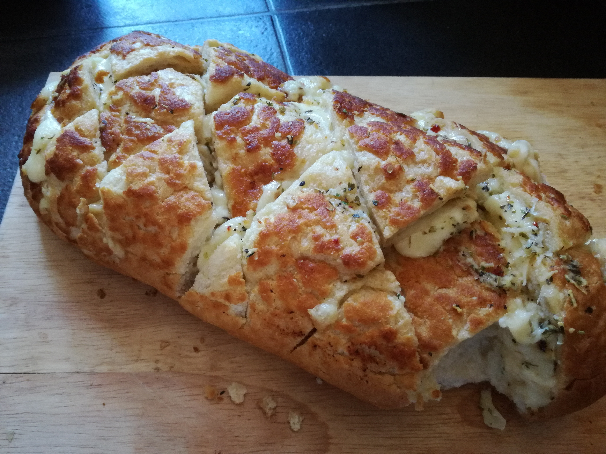

Garlic Bread
Back to Home

Garlic Bread Description
Garlic bread consists of bread, topped with garlic and olive oil or butter and may include additional herbs, such as chives. It is then either grilled or broiled until toasted or baked in an oven. It is typically made using a French baguette, or sometimes a sourdough like ciabatta which is partially sliced downwards, allowing the condiments to soak into the loaf while keeping it in one piece. The bread is then stuffed through the cuts with oil and minced garlic before baking.
Ingredients
- 1 loaf of bread
- 1/2 cup of butter
- 1/4 cup of olive oil
- 1/4 cup of parsley
- 1/4 cup of garlic
- 1/4 cup of parmesan cheese
Steps
- Preheat oven to 350 degrees F (175 degrees C).
- In a small saucepan over medium heat, melt butter with olive oil. Stir in garlic and parsley.
- Cut the bread into slices and spread the butter mixture on each slice. Sprinkle with Parmesan cheese.
- Wrap loaf in foil and bake for 15 minutes. Increase the heat to 400 degrees F (200 degrees C), open the foil, and bake for an additional 5 to 10 minutes.